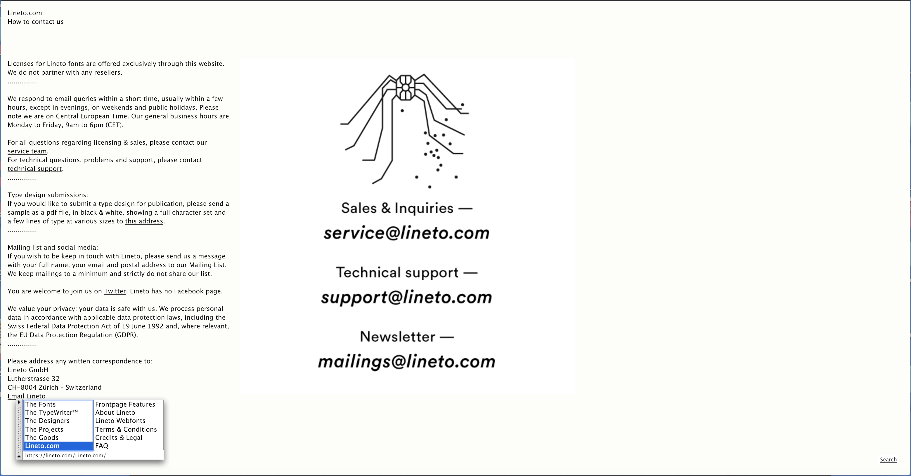
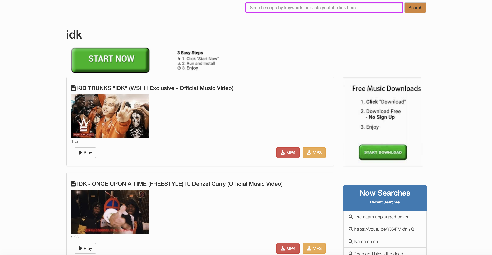

.
Class Exercise 1: Navigation
Lineto

- The website is a type foundry's website to display their fonts and work.
- The website include a page of fonts, an interactive "TypeWriter", profiles of designers, a page of projects, and a store.
- The navigation is very clear because it's on the bottom of the page, where it shows exactly where you on are on the page. The navigation is also movable so it doesn't get in the way of your experience on the page.>
Online Free Music

- This website is a place to illegally download music.
- There is a search bar to look up songs and then you can select a song to download. There are also a lot of ads.
- This is bad navigation because the ads are very misleading. When trying to download a song, it is easy to accidentally click on a spam ad.
A third website

- This website is a Christian website about Christianity.
- There are a lot of links to a lot of things. It looks like a Lisa Frank book but about Jesus.
- The side bar is easy to navigate, however, in each page there are a lot of images that lead to other website without any context.